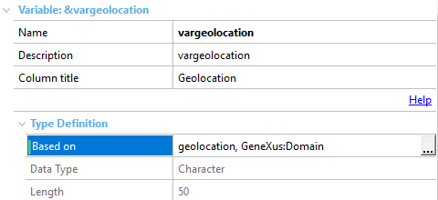
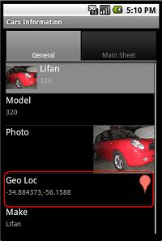
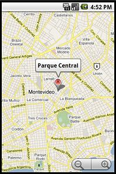

The Geolocation domain is a data type that allows managing geographic information in terms of latitude and longitude. A variable or attribute based on this domain accepts latitude/longitude coordinates as character input. Example&varGeolocation = "-36.123 , -57.235" Where VarGeolocation is defined as  In View mode, when the selector displayed is selected with a tap, it allows you to jump to a map indicating the location given by the coordinates with a pin. Sample in View Mode Sample after tapping  Notes
TroubleshootingThe following errors may appear: The Google Maps Platform server rejected your request. The provided API key is expired The Google Maps Platform server rejected your request. This API project is not authorized to use this API Make sure you enable the previous services from the Google console and double check the API key is valid. |